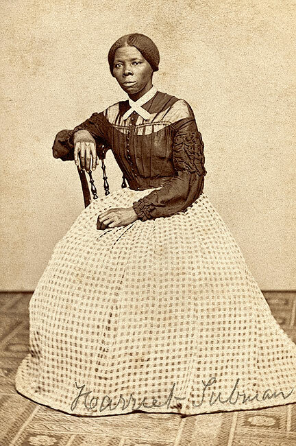
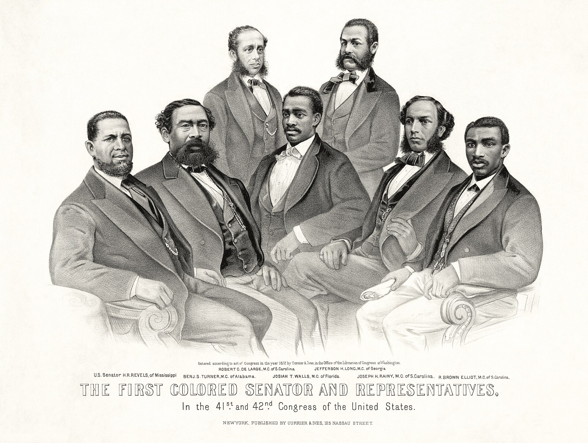
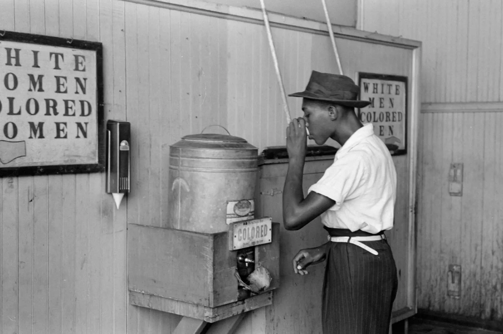
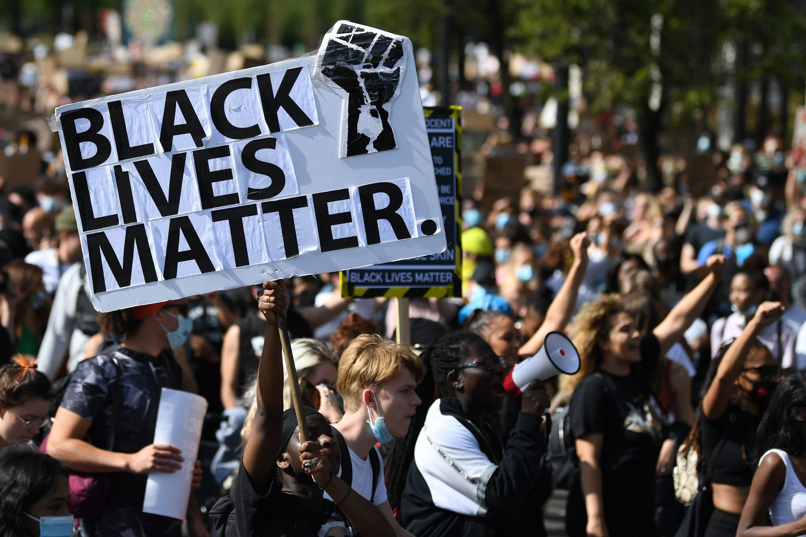

In 1848, a woman named Harriet Tubman walked off a plantation in Maryland and kept walking north. She was not just escaping. She was making a decision that would shape the rest of her life. She came back south 13 more times. She led 70 people to freedom through the Underground Railroad, and not one of them was ever recaptured. She did it while wanted for arrest, while moving at night, while living under a system designed in every possible way to make freedom impossible. Her story is not an exception to the history of enslavementA system in which people were forced into unpaid labor, denied all legal rights, and treated as property, backed by laws, violence, and the full power of government.. It is the heart of it.
Enslavement as a System, Not Just a Condition

Enslavement in the United States was not simply a matter of people being forced to work. It was a legal and economic system, carefully designed and maintained by laws, courts, governments, and businesses. By 1860, the enslaved population of the United States was valued at approximately 3.5 billion dollars. That was more than the value of all the factories and railroads in the country combined. Enslavement was not a side feature of American capitalism. It was its foundation.
The system worked through a web of interlocking laws. The Fugitive Slave Act required people in free states to return escaped enslaved people to their enslavers. Laws in Southern states made it illegal to teach enslaved people to read. The Dred Scott decision of 1857 declared that Black Americans, whether enslaved or free, were not and could never be citizens of the United States. Every institution: courts, churches, newspapers, and schools: was used to make enslavement seem natural and permanent.
The violence required to maintain this system was extraordinary. Enslavers understood that if enslaved people were allowed to feel fully human, the system would collapse. So the system worked systematically to destroy the things that make people feel human: family bonds were broken when people were sold; languages and cultural practices from Africa were suppressed; names were taken and replaced; and any act of defiance was met with brutal public punishment designed to make resistance seem impossible.
Understanding enslavement as a system rather than just a historical condition matters for one reason: systems do not end by accident. They are dismantled deliberately. And when they are only partially dismantled, their effects persist long after the laws that created them are gone. That is exactly what happened in the United States after 1865.
"I have observed this in my experience of slavery: that whenever my condition was improved, instead of its increasing my contentment, it only increased my desire to be free."
Frederick Douglass, Narrative of the Life of Frederick Douglass, an American Slave, 1845.
Douglass was born into slavery in Maryland and taught himself to read in secret; this book, written after his escape, was one of the most powerful arguments against the system ever published, and it was immediately banned in the South because slaveholders feared exactly the kind of thinking he was describing.
Question 1: Douglass says that better conditions made him want freedom MORE, not less. Why do you think the people running the system feared that kind of thinking?
Question 2: How does this connect to the essential question about how enslaved people resisted from inside the system?
Resistance from the Beginning
Enslaved people resisted from the moment they were captured. They resisted on slave ships by refusing to eat, organizing revolts, and jumping overboard. They resisted on plantations by slowing their work, destroying tools, burning crops, running away, and organizing uprisings. They resisted in their minds by keeping African spiritual practices alive in secret, passing down oral traditions, and building tight community bonds that the system could not fully break.


In 1831, Nat Turner led the largest slave revolt in American history in Southampton, Virginia. Turner and his followers killed approximately 60 white slaveholders before the rebellion was put down. Turner was captured, tried, and executed. The response was immediate and brutal: Southern states passed new laws making it even harder for enslaved people to move, gather, or learn to read. The revolt terrified slaveholders precisely because it showed that the system was always vulnerable.
The Underground Railroad was one of the most remarkable resistanceThe act of fighting back against an unjust system, which can include organized protests, escapes, legal battles, cultural preservation, and everyday acts of defiance. networks in American history. It was not a single route or organization. It was a loose network of thousands of people: Black and white, enslaved and free: who hid people, provided food and shelter, and moved freedom seekers north. Between 1810 and 1860, an estimated 100,000 people escaped enslavement using this network.
Literacy was one of the most powerful forms of resistance. Teaching enslaved people to read was illegal in most Southern states because reading opened a door the system wanted kept shut. It meant access to the Bible, which some used to argue that God did not sanction slavery. It meant access to newspapers and abolitionist pamphlets. It meant the ability to forge travel passes. Frederick Douglass, Harriet Jacobs, Solomon Northup, and others used literacy to write themselves into history when the system had tried to write them out of it entirely.

Reconstruction: Power Won and Deliberately Destroyed

When the Civil War ended in 1865, something remarkable happened. For roughly twelve years, ReconstructionThe period from 1865 to 1877 when the U.S. government tried to rebuild the South and integrate formerly enslaved people into full citizenship, including voting rights and public office. transformed the political landscape of the South. Black men voted in massive numbers. Sixteen Black Americans served in Congress. Over 600 served in state legislatures. Black communities built schools, churches, and businesses at a pace that astonished observers. For the first time in American history, the promise of democracy was being extended to people it had always excluded.
Then it was systematically destroyed. White supremacist groups like the Ku Klux Klan used targeted assassination, arson, and mass violence to terrorize Black voters and officials. In 1877, a political deal between Northern and Southern leaders ended Reconstruction and withdrew federal troops from the South. Without protection, Black political power collapsed within years. By 1900, nearly all the voting rights won during Reconstruction had been taken away through a combination of violence and laws like poll taxes, literacy tests, and grandfather clauses designed specifically to exclude Black voters.
The period that followed, roughly 1877 to 1950, is called the Jim Crow era. Segregation was enforced by law across the South. Black Americans were excluded from good schools, hospitals, hotels, restaurants, and jobs. Between 1877 and 1950, approximately 4,000 Black Americans were lynched, usually in public, often with crowds watching. This violence was not random. It was a deliberate campaign to maintain white supremacy through terror.
"The slave went free; stood a brief moment in the sun; then moved back again toward slavery."
W.E.B. Du Bois, Black Reconstruction in America, 1935.
Du Bois wrote this book to correct what he saw as a lie: the standard history of Reconstruction portrayed it as a failure caused by incompetent Black politicians, when in reality it was a genuine democracy that was violently destroyed by white supremacist terror.
Question 1: Du Bois describes Reconstruction as "a brief moment in the sun." Based on what you have read, what do you think he meant by that phrase?
Question 2: If Reconstruction showed that Black political power was possible, what does its destruction tell us about how the essential question gets answered: how do you transform democracy from the inside when the outside keeps pushing back?

The destruction of Reconstruction was not inevitable. It was a choice made by powerful people who decided that white supremacy mattered more than democracy. Understanding that fact matters because it tells us something important: progress can be reversed. Rights can be taken away. The history of Black Americans in this country is not a straight line upward. It is a story of progress won, destroyed, won again, and still being defended today.
Migration, Movement, and the Claim to Power

Between 1910 and 1970, approximately 6 million Black Americans left the South in what historians call the Great MigrationThe massive movement of approximately 6 million Black Americans from the rural South to cities in the North and West between 1910 and 1970, driven by racial violence, Jim Crow laws, and the search for economic opportunity.. They were not just running from something. They were moving toward something: better wages, better schools, the ability to vote, and freedom from the daily terror of lynching and Jim Crow. Cities like Chicago, Detroit, Harlem, and Los Angeles were transformed. Black neighborhoods, businesses, newspapers, music, and political organizations flourished in ways that the South had made impossible.
The Harlem Renaissance of the 1920s was one direct result of the Great Migration. Black writers, artists, musicians, and intellectuals gathered in New York and produced a cultural explosion that changed American art forever. Langston Hughes, Zora Neale Hurston, Duke Ellington, and Billie Holiday were not just entertainers. They were arguing, through their work, that Black life was rich, complex, and worthy of full dignity. That argument was itself a form of resistance in a country that had spent 300 years saying the opposite.
The civil rights movement of the 1950s and 1960s was a second Reconstruction. It used legal challenges, economic boycotts, sit-ins, freedom rides, and massive marches to dismantle Jim Crow and reclaim the rights that Reconstruction had briefly won. The Montgomery Bus Boycott of 1955 lasted 381 days and destroyed the bus company's finances. The sit-in campaigns at lunch counters spread to 54 cities in two months. The Selma to Montgomery marches of 1965 forced the passage of the Voting Rights Act.
Here is the resistance timeline that connects all of this:
1831
Nat Turner's Rebellion
The largest slave revolt in U.S. history. Terrified slaveholders across the South and proved the system was never fully in control.
1849–1860
Harriet Tubman and the Underground Railroad
Tubman made 13 return trips south and led approximately 70 people to freedom. An estimated 100,000 people escaped through the network overall.
1865–1877
Reconstruction
Black men voted, held office, and built schools. The first real experiment in multiracial democracy in American history — until it was violently destroyed.
1910–1970
The Great Migration
6 million Black Americans moved north and west. Not just an economic movement: a geographic act of resistance against the South's terror campaign.
1920s
The Harlem Renaissance
A cultural revolution in Black art, music, literature, and intellectual life. Argued through creative work that Black humanity was undeniable.
1955–1968
The Civil Rights Movement
Boycotts, sit-ins, marches, and legal battles dismantled Jim Crow and won the Civil Rights Act of 1964 and the Voting Rights Act of 1965.
2013–present
Black Lives Matter
Founded after the killing of Trayvon Martin. Grew into one of the largest protest movements in U.S. history after the murder of George Floyd in 2020.
🏠 San Diego Connection: The Great Migration Came Here Too
San Diego's Black community grew significantly during and after World War II, when Black workers and military personnel arrived for defense industry jobs and naval service. Neighborhoods like Logan Heights and Southeast San Diego became centers of Black community life, culture, and activism. The NAACP San Diego chapter, one of the oldest in California, fought housing discrimination, school segregation, and police brutality here for decades.
In 1963, the San Diego NAACP organized a school boycott to protest the segregation of San Diego Unified School District schools — a direct connection between the national civil rights movement and your own city's history.
How This Still Matters Today
The debate over what America owes Black Americans for 250 years of enslaved labor and 100 years of deliberate political exclusion is one of the most contested questions in U.S. politics right now.
The word reparationsCompensation paid to a group of people for serious historical harm done to them; in the U.S., this refers to the ongoing debate over whether Black Americans should be compensated for the economic damage caused by enslavement and Jim Crow laws. refers to the idea that the U.S. government owes compensation to Black Americans for the economic and political harm caused by enslavement and its aftermath. The argument is not new: the first formal proposal for reparations was introduced in Congress in 1989, and a bill calling for a commission to study the issue, H.R. 40, has been introduced in every Congress since then. In 2023, California became the first state to formally study reparations through a state commission.
The racial wealth gap in the United States is directly traceable to the history in this lesson. Black families today hold, on average, about one-eighth the wealth of white families. That gap did not come from nowhere. It came from 250 years of unpaid labor, followed by a century of laws that blocked Black Americans from buying homes, accessing GI Bill benefits, building wealth, and voting. Understanding that history is the first step toward honestly debating what to do about it.
- California Reparations Commission: What It Found and What Happens Next
- Black Lives Matter: Impact on Voting Rights and Police Reform
- The Racial Wealth Gap: Causes, Consequences, and What Could Change It

Harriet Tubman went back 13 times. Reconstruction was destroyed and then rebuilt. The civil rights movement won laws that are still being challenged today. If transforming democracy from the inside requires this much effort and this much time, what does that tell us about the democracy itself? And what does it ask of us right now?